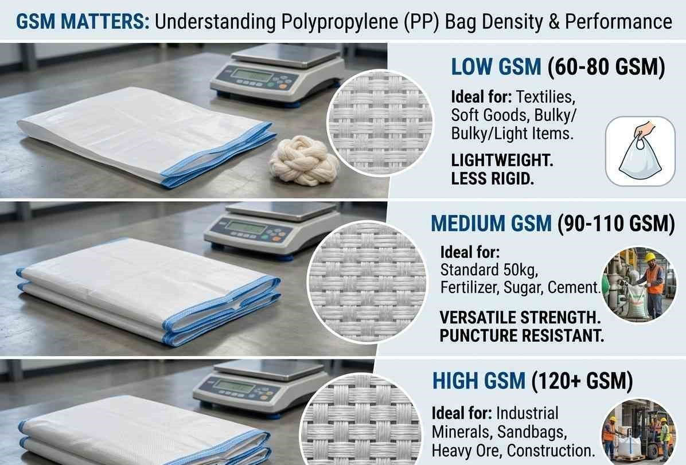
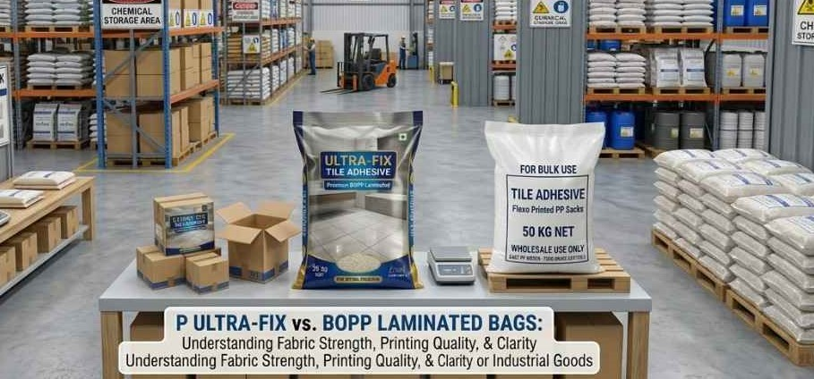
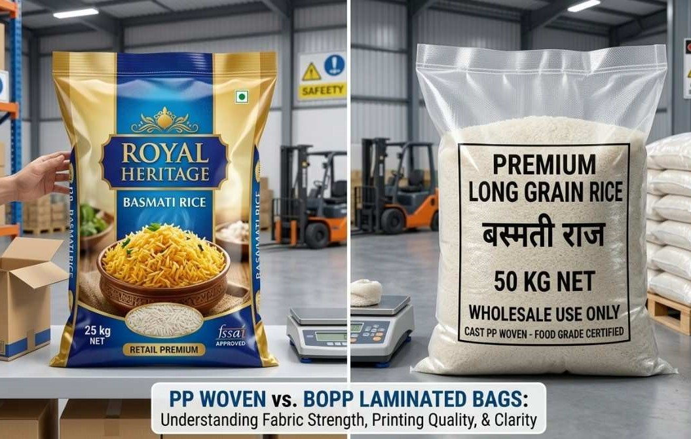
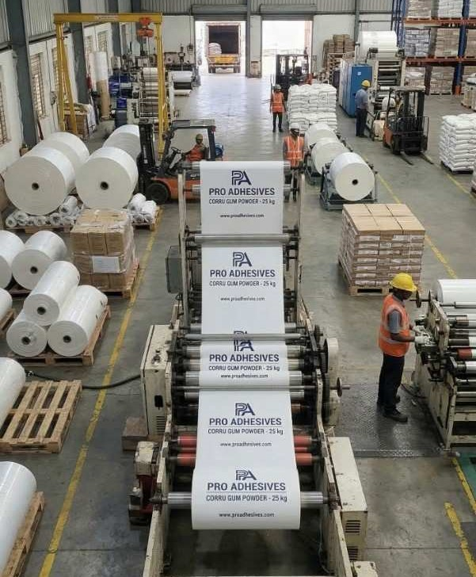
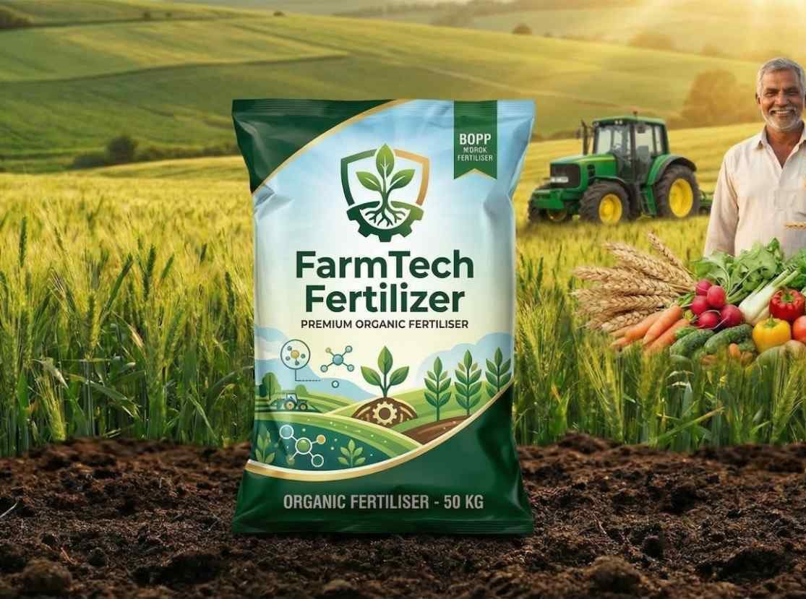
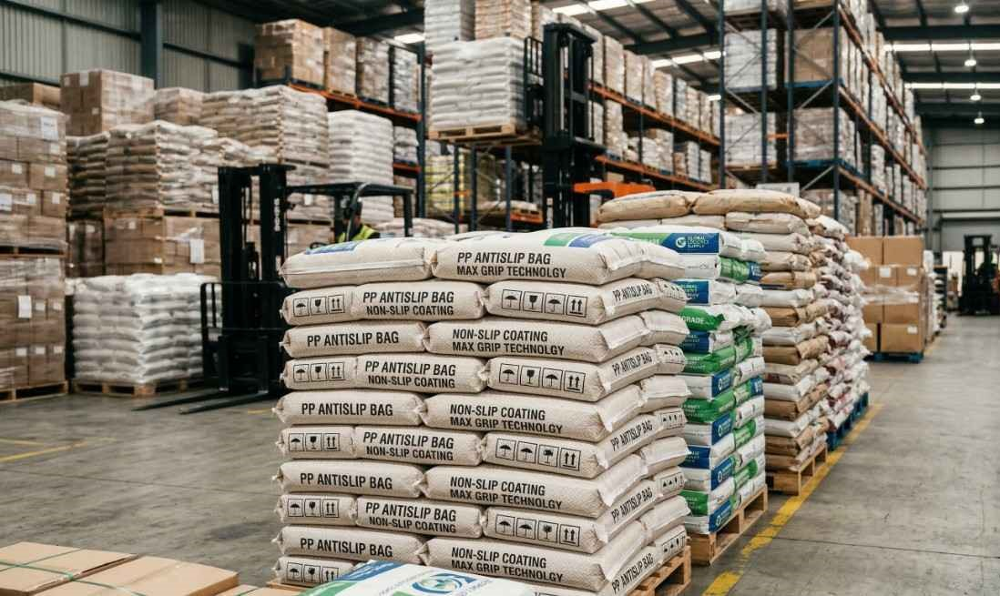

Expert tips, guides and industry information about PP woven bags, BOPP laminated polybags, GSM selection and packaging best practices for Indian industries.

GSM stands for grams per square meter and determines how strong and heavy a polypropylene bag is. Learn which GSM is right for your product.
Read Article →
Confused about which bag to choose for your product? This guide explains the key differences between PP and BOPP bags with clear examples.
Read Article →
From plain PP bags to BOPP laminated gold finish bags — this guide helps rice mill owners choose the best bag for their brand and budget.
Read Article →
Learn exactly how to place an order for custom printed PP bags — from sending your artwork to receiving your first bulk order.
Read Article →
Fertilizer bags need to handle chemicals, weight and rough transport. Learn which GSM, lamination and bag type is best for your fertilizer product.
Read Article →
Anti slip bags prevent pallet loads from shifting during sea freight and container transport. Find out why they are essential for export packaging.
Read Article →